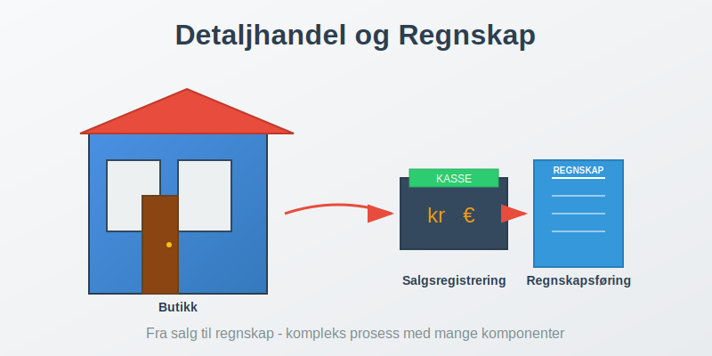
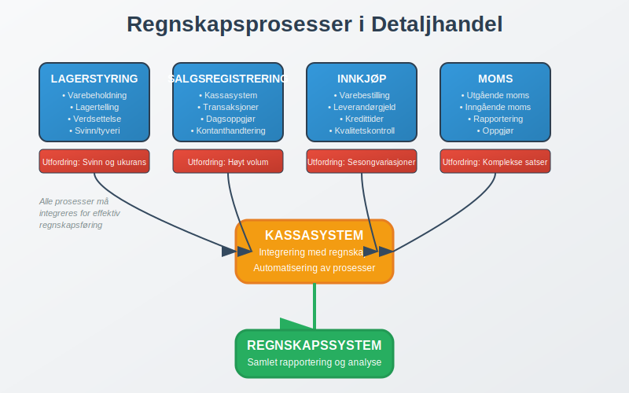
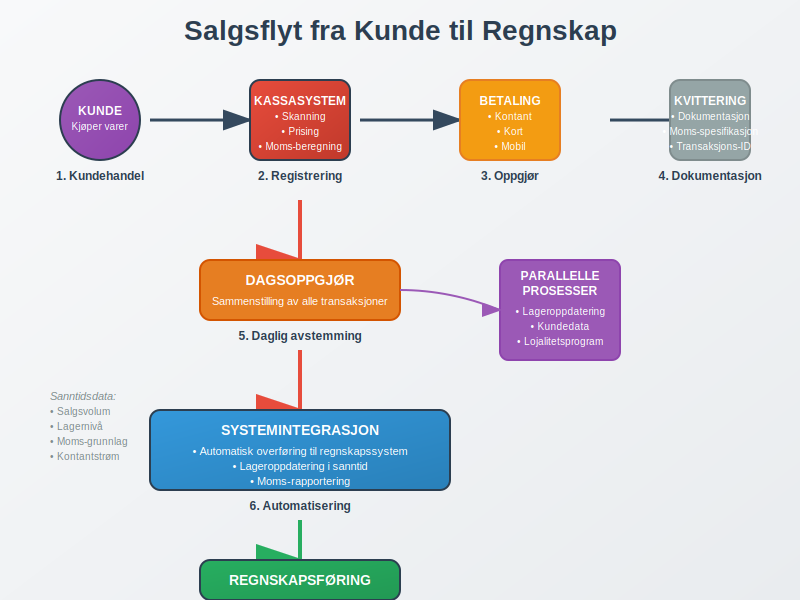
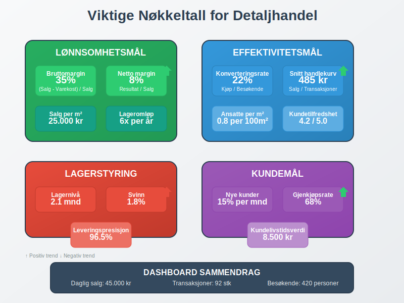

Detaljhandel er salg av varer direkte til sluttforbrukere gjennom fysiske butikker eller digitale plattformer. Dette skiller seg fra engroshandel som selger til andre virksomheter. Detaljhandel er en klassisk B2C-virksomhet hvor bedrifter selger direkte til privatpersoner. Detaljhandel er en av de mest komplekse virksomhetstypene når det gjelder regnskapsføring på grunn av høyt transaksjonsvolum, lagerstyring og spesialiserte systemer for salgsregistrering.

Hva er Detaljhandel?
Detaljhandel omfatter alle former for direkte salg til forbrukere innen B2C-handel, inkludert:
- Fysiske butikker - tradisjonelle butikklokaler
- Netthandel - e-handel og digitale plattformer
- Kombinerte løsninger - omnikanalhandel
- Markedsplasser - salg på torv og markeder
- Mobilhandel - food trucks og mobile enheter
Kjennetegn ved Detaljhandel
Detaljhandelsvirksomheter har flere unike karakteristikker som påvirker regnskapsføringen:
- Høyt transaksjonsvolum med mange små salg (typisk for B2C-handel)
- Kompleks lagerstyring med mange varelinjer
- Sesongvariasjoner i salg og innkjøp
- Kontant- og kortsalg som krever bankavstemming
- Moms-håndtering på alle salgstransaksjoner
Regnskapsføring i Detaljhandel
Grunnleggende Regnskapsprinsipper
Detaljhandel følger standard regnskapsprinsipper, men med spesiell fokus på:

Viktige Regnskapsområder:
| Område | Beskrivelse | Utfordringer |
|---|---|---|
| Lagerstyring | Registrering av varebeholdning | Svinn, tyveri, Ukurans |
| Salgsregistrering | Daglige salgstransaksjoner | Høyt volum, kontanthandtering |
| Innkjøp | Vareinnkjøp og leverandørgjeld | Sesongvariasjoner, kredittider |
| Moms | Utgående og inngående moms | Komplekse moms-satser |
| Kassasystem | Integrering med regnskap | Teknisk kompleksitet |
Lagerstyring og Varebeholdning
Lagerstyring er kritisk i detaljhandel og påvirker både balansen og resultatregnskapet.
Lagerverdsettelse
Detaljhandel bruker typisk følgende metoder:
- FIFO (First In, First Out) - mest vanlig
- Gjennomsnittskost - for homogene varer
- Spesifikk identifikasjon - for unike/dyre varer med GTIN/EAN-koder
Lagertelling og Svinn
Regelmessig lagertelling er essensielt for:
- Oppdage svinn og tyveri
- Justere bokført beholdning
- Beregne bruttofortjeneste
- Planlegge innkjøp
Salgsregistrering og Kassasystemer

Moderne Kassasystemer
Dagens kassasystemer integreres direkte med regnskapet og håndterer:
- Automatisk salgsregistrering basert på GTIN/EAN-koder
- Lageroppdatering i sanntid
- Moms-beregning og rapportering
- Kundedata og lojalitetsprogrammer
- Rapportering til regnskapssystem
Daglig Kassaoppgjør
Hver dag må butikken gjennomføre dagsoppgjør som inkluderer:
- Kontanttelling mot kassasystem
- Kortbetalinger avstemming
- Returvarer registrering
- Rabatter og kampanjer
- Overføring til regnskapssystem
Moms i Detaljhandel
Utgående Moms
Detaljhandel må håndtere utgående moms på alle salg til privatpersoner, som er standardprosedyre i B2C-handel:
| Vare/Tjeneste | Moms-sats | Eksempler |
|---|---|---|
| Vanlige varer | 25% | Klær, elektronikk, møbler |
| Næringsmidler | 15% | Mat, drikke (ikke alkohol) |
| Transport | 12% | Kollektivtransport |
| Bøker/aviser | 0% | Trykte publikasjoner |
Inngående Moms
Butikker kan trekke fra inngående moms på:
- Vareinnkjøp til videresalg
- Driftskostnader som husleie, strøm
- Investeringer i utstyr og inventar
- Tjenester som regnskap og markedsføring
Moms-rapportering
Detaljhandel må levere moms-oppgave hver annen måned med:
- Utgående moms fra salg
- Inngående moms fra innkjøp
- Netto moms til betaling/tilbakebetaling
Økonomistyring i Detaljhandel
Nøkkeltall og KPI-er

Detaljhandel bruker spesialiserte nøkkeltall:
Lønnsomhetsmål:
- Bruttomargin = (Salg - Varekostnad) / Salg × 100%
- Netto margin = Resultat / Salg × 100%
- Salg per kvadratmeter = Årlig salg / Butikkareal
- Lageromløpshastighet = Varekostnad / Gjennomsnittlig lager
Effektivitetsmål:
- Konverteringsrate = Antall kjøp / Antall besøkende
- Gjennomsnittlig handlekurv = Totalt salg / Antall transaksjoner
- Kundetilfredshet og lojalitet
- Ansatte per kvadratmeter
Budsjettering og Prognoser
Detaljhandel krever detaljert budsjettering på grunn av:
- Sesongvariasjoner - høytider og ferieperioder
- Trendendringer - mote og forbrukerpreferanser
- Konkurransesituasjon - priser og kampanjer
- Økonomiske forhold - kjøpekraft og inflasjon
Teknologi og Digitalisering
Integrerte Systemer
Moderne detaljhandel bruker integrerte systemer som kobler sammen:
- Kassasystem (POS - Point of Sale)
- Lagerstyringssystem (WMS - Warehouse Management)
- Regnskapssystem (ERP - Enterprise Resource Planning)
- E-handelplattform for nettbutikk
- CRM-system for kundedata
Automatisering av Regnskapsføring
Teknologi muliggjør automatisering av:
- Salgsregistrering fra kassasystem
- Lageroppdateringer ved salg og innkjøp
- Moms-beregning og rapportering
- Leverandørfakturaer med OCR-teknologi
- Banktransaksjoner og avstemming
Utfordringer i Detaljhandel
Operasjonelle Utfordringer
- Svinn og tyveri - påvirker lønnsomhet direkte
- Sesongvariasjoner - krever fleksibel bemanning
- Tekniske problemer - kassasystem og nettbutikk
- Leverandørforhold - kredittider og kvalitet
Regnskapsmessige Utfordringer
- Høyt transaksjonsvolum - krever effektive systemer (typisk for B2C-virksomheter)
- Kompleks moms-håndtering - ulike satser og regler
- Lagerverdsettelse - påvirker resultat betydelig
- Kontanthandtering - risiko for feil og svindel
Compliance og Regulering
Detaljhandel må forholde seg til:
- Bokføringsloven - krav til dokumentasjon
- Kassasystemforskriften - tekniske krav til kasser
- Personvernforordningen (GDPR) - kundedata
- Forbrukerrettigheter - retur og reklamasjon
Beste Praksis for Detaljhandel
Daglige Rutiner
- Morgentelling av kasse og lager
- Kontinuerlig oppdatering av priser og kampanjer
- Regelmessig backup av kassasystem
- Daglig avstemming mot regnskapssystem
Månedlige Oppgaver
- Fullstendig lagertelling eller syklisk telling
- Leverandøravstemming og fakturagjennomgang
- Moms-oppgave forberedelse og levering
- Resultatanalyse og nøkkeltall-oppfølging
Årlige Aktiviteter
- Årlig inventar og lagerverdsettelse
- Årsregnskap og revisjonsgjennomgang
- Budsjett for neste år
- Systemoppdateringer og vedlikehold
Fremtiden for Detaljhandel
Digitale Trender
- Omnikanalhandel - sømløs opplevelse på tvers av kanaler
- Kunstig intelligens - for prognoser og personalisering
- Automatiserte butikker - selvbetjening og sensorer
- Bærekraftig handel - miljøfokus og sirkulærøkonomi
Regnskapsmessige Implikasjoner
- Sanntidsrapportering - kontinuerlig oppdatering
- Prediktiv analyse - for bedre beslutninger
- Automatisert compliance - regelverkshåndtering
- Integrert økonomiledelse - helhetlig styring
Konklusjon
Detaljhandel representerer en kompleks virksomhetstype som krever spesialisert kunnskap innen regnskapsføring og økonomistyring. Suksess avhenger av:
- Effektive systemer for salgs- og lagerregistrering
- Nøyaktig moms-håndtering og compliance
- Kontinuerlig oppfølging av nøkkeltall og lønnsomhet
- Teknologisk oppdatering for å møte fremtidens krav
Ved å følge beste praksis og investere i riktige systemer kan detaljhandelsvirksomheter oppnå både operasjonell effektivitet og finansiell kontroll som grunnlag for bærekraftig vekst.